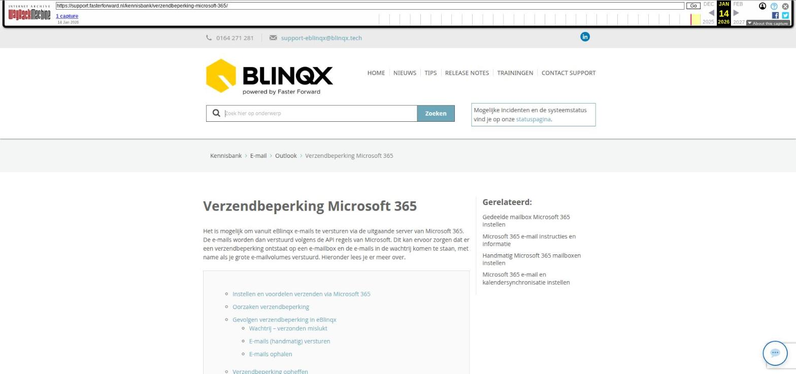

Verzendbeperking Microsoft 365

Tekstinhoud
Verzendbeperking Microsoft 365
Het is mogelijk om vanuit eBlinqx e-mails te versturen via de uitgaande server van Microsoft 365. De e-mails worden dan verstuurd volgens de API regels van Microsoft. Dit kan ervoor zorgen dat er een verzendbeperking ontstaat op een e-mailbox en de e-mails in de wachtrij komen te staan, met name als je grote e-mailvolumes verstuurd. Hieronder lees je er meer over.
Instellen en voordelen verzenden via Microsoft 365
Oorzaken verzendbeperking
Gevolgen verzendbeperking in eBlinqx
Wachtrij – verzonden mislukt
E-mails (handmatig) versturen
E-mails ophalen
Verzendbeperking opheffen
Instellen en voordelen verzenden via Microsoft 365
Per e-mailbox kan je aangeven of de e-mail verzonden moet worden via de uitgaande server van Microsoft 365. Dit stel je in via de e-mailmanager. Hier lees je er meer over. Het verzenden via Microsoft 365 heeft verschillende voordelen, namelijk:
De uitgaande e-mails verstuurd vanuit eBlinqx zie je terug in de verzonden items map van Microsoft, bijvoorbeeld op je mobiele telefoon
Het is niet nodig om de SPF, DKIM en DMARC in te stellen
Oorzaken verzendbeperking
Met het verzenden van de e-mails via de API Microsoft 365 hebben we te maken met API-limieten. Bereik je dit limiet dan komt er een verzendbeperking op de e-mailbox. De verzonden e-mails komen dan in een wachtrij te staan om later, als de verzendbeperking is opgeheven, alsnog automatisch te worden verstuurd. Dit limiet kan je bereiken als je grote e-mailvolumes tegelijk verstuurd, bijvoorbeeld bij het versturen van campagnes of het verzenden van facturen via het facturenoverzicht. Ook hangt het bereiken van de limiet af van de grootte van de e-mails en de bijlagen die mee worden gestuurd. Daarnaast kan verdacht e-mailgebruik ervoor zorgen dat de e-mailbox wordt geblokkeerd. Een voorbeeld hiervan is dat je in één keer grote hoeveelheden e-mails naar één specifieke ontvanger verstuurt.
Bij het reguliere gebruik van de e-mail zal er niet snel een verzendbeperking op de e-mailbox geplaatst worden.
Gevolgen verzendbeperking in eBlinqx
Let op: het is belangrijk om te weten dat deze verzendbeperking niet door ons wordt opgelegd, maar door Microsoft 365. Microsoft 365 beheert de API, waarover wij de e-mails versturen. Zij bepalen de limieten en stellen een verzendbeperking in. Onze oplossing hiervoor is de e-mails in de wachtrij plaatsen om deze later alsnog te kunnen versturen.
Wachtrij – verzonden mislukt
Als je de API-limieten hebt bereikt, bijvoorbeeld door e-mails in bulk te verzenden, dan wordt er een verzendbeperking op de e-mailbox gezet. De e-mails die nog verzonden moeten worden, worden dan in een wachtrij geplaatst om later alsnog automatisch verzonden te worden. Deze e-mails vind je terug in de map 'Verzenden mislukt' van de betreffende mailbox. Bij de e-mails staat een paarse melding, waarin wordt aangegeven dat door een tijdelijke verzendbeperking vanuit Microsoft 365 het verzenden van de e-mail is uitgesteld met daarbij een datum en tijd waarop de e-mail opnieuw wordt verzonden. Deze datum en tijd krijgen wij terug vanuit de API van Microsoft. Krijgen wij de datum en tijd niet terug dan geven we een verwachte datum en tijd. Op dat verwachte moment gaan we opnieuw proberen de e-mail te versturen. Is de mailbox nog steeds geblokkeerd dan komt er een andere tijd en wellicht datum te staan. Deze melding is zowel zichtbaar in de e-mailmodule als in het dossier – tabblad Communicatie – E-mail.
Het is dus niet nodig om deze e-mails opnieuw zelf te versturen. Het heeft ook geen zin om deze nogmaals te versturen, vanwege de verzendbeperking.
Ook in de campagnemanager wordt onder het tabblad Resultaat aangegeven als de e-mailbox tijdelijk is geblokkeerd. Zo is het duidelijk dat de e-mails vanuit de campagne niet direct worden verstuurd.
E-mails (handmatig) versturen
Vanuit de geblokkeerde mailbox is het nog steeds mogelijk om e-mails op te stellen en te versturen. Maar let op: deze e-mails komen óók in de wachtrij te staan. Deze worden niet direct verstuurd. Pas als de verzendbeperking is opgeheven. Dit wordt tijdens het opstellen van de e-mail ook aangegeven door middel van een melding.
E-mails ophalen
Het is niet mogelijk om e-mails op te halen in de e-mailbox die is geblokkeerd. Ook deze beperking wordt opgelegd door Microsoft 365. Wil je de e-mails handmatig ophalen bij een geblokkeerde mailbox dan verschijnt er de melding: 'E-mailbox is tijdelijk niet beschikbaar vanwege verzendbeperkingen vanuit Microsoft 365. Dit is een automatische beveiligingsmaatregel, deze wordt vanzelf opgeheven'. Met daarbij de datum en tijd tot wanneer dit kan duren. Ook staat er een rode driehoek bij de betreffende mailbox.
Verzendbeperking opheffen
Jijzelf en wij kunnen er niets aan doen om de verzendbeperking eerder op te heffen. Zoals eerder aangegeven wordt de verzendbeperking opgelegd vanuit Microsoft 365. Je zult moeten wachten, totdat de verzendbeperking is opgeheven.
Een tip is om speciaal aangemaakte mailboxen te gebruiken voor het versturen van de facturen vanuit het facturenoverzicht en een campagne. Op deze manier voorkom je dat jouw persoonlijke mailbox of een veel gebruikte algemene mailbox wordt geblokkeerd.
Laatste update: 17 november 2025
Was deze informatie nuttig?
Ja Nee